토목기사 (2010-05-09 기출문제)
1과목: 응용역학
1. 아래 그림과 같은 연속보가 있다. B점과 C점 중간에 10t의 하중이 작용할 때 B점에서의 휨모멘트 M은? (단, 탄성계수 E와 단면 2차 모멘트 I는 전구간에 걸쳐 일정하다.)
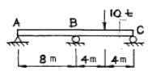
- -5tㆍm
- -7.5tㆍm
- -10tㆍm
- -15tㆍm
(정답률: 75%)

2. 다음 그림과 같은 하중을 받는 트러스에서 A지점은 힌지(hinge), B지점은 로울러(roller)로 되어 있을 때 A점의 반력의 합력 크기는?
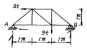
- 3t
- 4t
- 5t
- 6t
(정답률: 48%)
3. 단면과 길이가 같으나 지지조건이 다른 그림과 같은 2개의 장주가 있다. 장주 (a)가 3t의 하중을 받을 수 있다면, 장주 (b)가 받을 수 있는 하중은?
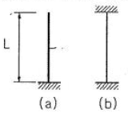
- 12t
- 24t
- 36t
- 48t
(정답률: 75%)
4. 축인장하중 P=2t을 받고 있는 지름 10cm의 원형봉 속에 발생하는 최대 전단응력은 얼마인가?
- 12.73 kg/cm2
- 15.15 kg/cm2
- 17.56 kg/cm2
- 19.98 kg/cm2
(정답률: 31%)
5. 그림과 같은 4분원 중에서 빗금 친 부분의 밑변으로부터 도심까지의 위치 y는?
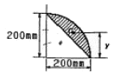
- 116.8 mm
- 126.8 mm
- 146.7 mm
- 158.7 mm
(정답률: 45%)
6. 다음 그림에서 A-A 축과 B-B 축에 대한 빗금부분의 단면 2차 모멘트가 각각 80000 cm4, 160000cm4 일 때 빗금 부분의 면적은?
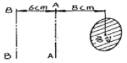
- 800 cm2
- 752 cm2
- 606 cm2
- 573 cm2
(정답률: 52%)
7. 단순보의 중앙에 수평하중 P가 작용할 때 B점에서의 처짐각을 구하면?
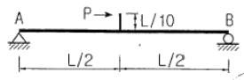
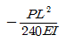
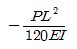
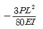
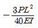
(정답률: 55%)
8. 그림과 같은 단순보에서 하중이 우에서 좌로 이동할 때 절대 최대 휨모멘트는 얼마인가?
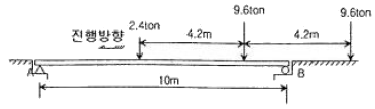
- 22.86 ton
- 25.86 ton
- 29.86 ton
- 33.86 ton
(정답률: 52%)
9. 다음 그림과 같은 보에서 휨모멘트에 의한 탄성변형 에너지를 구한 값은?
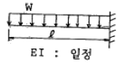
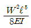
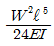
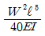
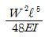
(정답률: 56%)
10. 그림과 같은 단면의 단면상승모멘트 Ixy는?
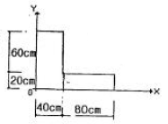
- 384.000cm4
- 3.840.000cm4
- 3.360.000cm4
- 3.520.000cm4
(정답률: 64%)
11. 그림과 같은 트러스의 사재 D의 부재력은?
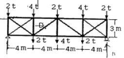
- 5 ton(인장)
- 5 ton(압축)
- 3.75on(인장)
- 3.75 ton(압축)
(정답률: 68%)
12. 그림과 같은 단순보의 B지점에 M=2tㆍm를 작용시켰더니 A및 B지점에서의 처짐각이 각각 0.08rad과 0.12rad이었다. 만일 A지점에서 3tㆍm의 단모멘트를 작용시킨다면 B지점에서의 처짐각은?
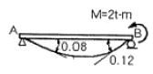
- 0.08radian
- 0.10radian
- 0.12radian
- 0.15radian
(정답률: 65%)
13. 길이 20cm, 단면 20cm×20cm인 부재에 100t의 전단력이 가해졌을 때 전단 변형량은? (단, 전단 탄성계수 G=80000 kg/cm2이다.)
- 0.0625cm
- 0.00625cm
- 0.0725cm
- 0.00725cm
(정답률: 62%)
14. 부양력 200kg인 기구가 수평선과 60°인 각으로 정지상태에 있을 때 기구의 끈에 작용하는 인장력(T)과 풍압(w)을 구하면?
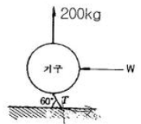
- T=220.94kg, w=1⑤.47kg
- T=230.94kg, w=115.47kg
- T=220.94kg, w=125.47kg
- T=230.94kg, w=135.47kg
(정답률: 80%)
15. 주어진 T형보 단면의 캔틸레버에서 최대 전단 응력을 구하면 얼마인가? (단, T형보 단면의 IN.A=86.8cm4이다.)
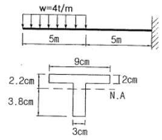
- 1256.8 kg/cm2
- 1663.6 kg/cm2
- 2079.5 kg/cm2
- 2433.2 kg/cm2
(정답률: 76%)
16. 직경 50mm, 길이 2m의 봉이 힘을 받아 길이가 2mm 늘어났다면, 이 때 이 봉의 직경은 얼마나 줄어드는가? (단, 이 봉의 포이슨(Poisson's)비는 0.3 이다.)
- 0.015mm
- 0.030mm
- 0.045mm
- 0.060mm
(정답률: 71%)
17. 그림의 보에서 지점 B의 휨모멘트는? (단, EI는 일정하다.)
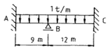
- -6.75 tㆍm
- -9.75 tㆍm
- -12 tㆍm
- -16.5 tㆍm
(정답률: 66%)
18. 그림과 같은 직사각형 단면의 보가 최대휨모멘트 Mmax=2tㆍm를 받을 때 a-a단면의 휨응력은?
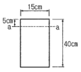
- 22.5kg/cm2
- 37.5kg/cm2
- 42.5kg/cm2
- 46.5kg/cm2
(정답률: 65%)
19. 그림과 같이 양단 고정보의 중앙점 C에 집중하중 P가 작용한다. C점의 처짐 δc는? (단, 보의 EI는 일정하다.)
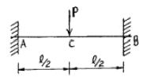
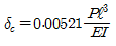
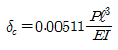
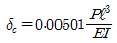
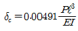
(정답률: 50%)
20. 기둥의 길이가 3m이고 단면이 100mm×120mm인 직사각형이 라면 이 기둥의 세장비는?
- 86.8
- 94.8
- 103.9
- 112.9
(정답률: 63%)
2과목: 측량학
21. 그림과 같이 삼각점 A, B의 경사거리 L과 고저각 θ를 관측하여 다음과 같은 결과를 얻었다. L=200Dm±5cm, θ=30° ±30° 이 결과값을 이용하여 수평거리 Lo를 구할 경우의 오차는?
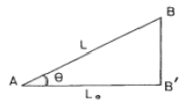
- ±10cm
- ±15cm
- ±20cm
- ±25cm
(정답률: 54%)
22. 사진측량의 특수 3점에 대한 설명 중 옳은 것은?
- 사진의 경사각이 0°인 경우에는 특수 3점이 일치 한다.
- 사진상에서 등각점을 구하는 것이 가장 쉽다.
- 기본변위는 주점에서 0이며 연직점에서 최대이다.
- 카메라 경사에 의한 사선방향의 변위는 등각점에서 최대이다.
(정답률: 61%)
23. 항공사진 촬영고도 6000m에서 촬영했을 때 수직 위치에 대한 일반적으로 허용되는 오차범위는?
- 0.3 ~ 0.6 cm
- 6 ~ 30 cm
- 0.6 ~ 1.2 m
- 3 ~ 6 m
(정답률: 47%)
24. 삼각측량을 위한 삼각점의 위치선정에 있어서 피해야 할 장소와 가장 거리가 먼 것은?
- 나무의 벌목면적이 큰 곳
- 습지 또는 하상인 곳
- 측표를 높게 설치해야 되는 곳
- 편심관측을 해야 되는 곳
(정답률: 68%)
25. 클로소이드의 매개변수 A=60m인 클로소이드(clothoid) 곡선 상의 시점으로부터 곡선길이(L)가 30m일 때 반지름(R)은?
- 60m
- 90m
- 120m
- 150m
(정답률: 67%)
26. 하천 양안의 고저차를 측정할 때 교호수준 측량을 많이 이용하는 가장 큰 이유는 무엇인가?
- 기계오차 및 광선의 굴절에 의한 오차를 소거하기 위하여
- 스타프(함척)를 세우기 편하게 하기 위하여
- 개인 오차를 제거하기 위하여
- 과실에 의한 오차를 제거하기 위하여
(정답률: 63%)
27. 100m2인 정사각형 토지의 면적을 0.1m2까지 정확하게 구하고자 한다면 이에 필요한 거리관측의 정확도는?
- 1/2000
- 1/1000
- 1/500
- 1/300
(정답률: 66%)
28. 해저지형측량에서 수심이 6000m이고 발사응이 약 10초 후에 수신되었다면 음파의 속도는?
- 300 m/s
- 600 m/s
- 1000 m/s
- 1200 m/s
(정답률: 44%)
29. 다음 중 도면에서 곡선에 둘러싸여 있는 부분의 면적을 구하기에 가장 적합한 것은?
- 좌표법에 의한 방법
- 배횡기법에 의한 방법
- 삼사법에 의한 방법
- 구적기에 의한 방법
(정답률: 75%)
30. 완화곡선에 대한 설명 중 옳지 않은 것은?
- 완화곡선은 모든 부분에서 곡률이 같다.
- 완화곡선의 반지름은 무한대에서 시작한 후 점차 감소되어 주어진 원곡선에 연결된다.
- 완화곡선의 접선은 시점에서 직선에 접한다.
- 완화곡선에 연한 곡선 반지름의 감소율은 캔트의 증가율과 같다.
(정답률: 47%)
31. 수분측량 결과가 표와 같을 때 A와 B의 정확한 표고가 각각 75.⑤5m, 72.993m이라면 측량결과를 보정한 측점5의 표고는?
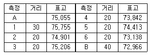
- 73.396m
- 74.413m
- 74.430m
- 74.447m
(정답률: 42%)
32. 삼각수준측량의 관측값에서 대기의 굴절오차(기차)와 지구의 곡률오차(구차)의 조정방법으로 옳은 것은?
- 기차는 높게, 구차는 낮게 조정한다.
- 기차는 낮게, 구차는 높게 조정한다.
- 기차와 구차를 함께 높게 조정한다.
- 기차와 구차를 함께 낮게 조정한다.
(정답률: 61%)
33. 축척 1:300으로 평판측량을 할 때 제도오차를 0.2mm로 한다면 허용되는 구심오차의 크기는?
- 1.5cm
- 3.0cm
- 6.0cm
- 10.0cm
(정답률: 46%)
34. 노선측량에서 단곡선을 설치할 때 간단하고 신속하게 설치할 수 있는 방법으로 1/4법이라고도 일컫는 것은?
- 편각설치법
- 절선편거와 현펀거에 의한 방법
- 중앙종거법
- 절선에 대한 지거에 의한 방법
(정답률: 58%)
35. 초점거리 150mm, 촬영고도 7000m로 평지를 촬영한 사진에서 주점으로부터 60mm 떨어지고 비고가 250m인 굴뚝의 기복변위량은?
- 2mm
- 4mm
- 6mm
- 8mm
(정답률: 39%)
36. 수준측량의 야장기입방법 중 가장 간단한 방법으로 전시(B.S.)와 후시(F.S.)만 있으면 되는 방법은?
- 고차식
- 이란식
- 기고식
- 승강식
(정답률: 67%)
37. 도로의 중심선을 따라 20cm 간격으로 종단측량을 실시한 결과가 다음과 같고, 측점 No.1의 도로 계획고를 21.50m로 하며 2%의 상향경사의 도로를 설치하면 No.5의 절토고는? (단, 지반고의 단위는 m임)
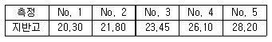
- 4.70m
- 5.10m
- 5.90m
- 6.10m
(정답률: 42%)
38. 지형의 표시방법으로 옳지 않은 것은?
- 지성선은 능선, 계곡선 및 경사변환선 등으로 표시 된다.
- 등고선의 간격은 일반적으로 주곡선의 간격을 말한다.
- 부호적 도법에는 영선법과 음영법이 있고 자연적 도법에는 점고법, 등고선과 채색법 등이 있다.
- 지성선이란 지형의 골격을 나타내는 선이다.
(정답률: 55%)
39. GPS 위성체계에서 이용하는 지구질량 중심을 원점으로 하는 좌표계는?
- 천문 좌표계
- TUM 좌표계
- WGS84 좌표계
- UPS 좌표계
(정답률: 66%)
40. 다음 그림과 같은 편심조정계산에서 T 값은? (단, ø=300°, S1=3km, S2=2km, e=0.5m, t=45° 30‘ S1≒S1, S2≒S2로 가정할 수 있음)
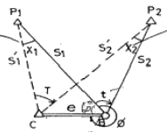
- 45° 29‘ 40“
- 45° 30‘ ⑤“
- 45° 30‘ 20“
- 45° 31‘ ⑤“
(정답률: 39%)
3과목: 수리학 및 수문학
41. 그림에서 유입손실이 제일 큰 것은?
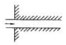
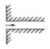
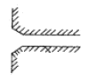
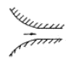
(정답률: 57%)
42. 개수로와 관수로의 흐름에 모두 적용되는 설명으로 옳은 것은?
- 중력이 흐름의 원동력이다.
- 압력이 흐름의 원동력이다.
- 자유수면을 갖는다.
- 마찰로 인한 에너지손실이 발생한다.
(정답률: 63%)
43. 개수로에서 수심 h, 면적 A, 유량 Q로 흐르고 있다. 에너지 보정계수를 α라고 할 때 비에너지 He를 구하는 식으로 옳은 것은? (단, h=수심, g=중력가속도)
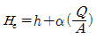
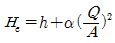
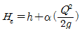
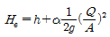
(정답률: 65%)
44. 증발량 산정방법이 아닌 것은?
- Balton법칙
- Holton공식
- Penman공식
- 물수지법
(정답률: 50%)
45. 그림은 관내의 손실수두와 유속과의 관계를 나타내고 있다. 유속 Va에 대한 설명으로 옳은 것은?
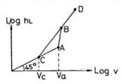
- 층류 → 난류로 변화하는 유속
- 난류 → 층류로 변화하는 유속
- 등류 → 부등류로 변화하는 유속
- 부등류 → 등류로 변화하는 유속
(정답률: 62%)
46. 댐의 상류부에서 발생되는 수면 곡선은?
- 배수 곡선
- 저하 곡선
- 수리특성 곡선
- 유사량 곡선
(정답률: 60%)
47. lDF 곡선의 강우강도와 지속기간의 관계에서 Talbot형으로 표시된 식은? (단, I는 강우강도, t는 지속기간, T는 생기빈도(지속기간)이고 a, b, c, d, e, n, k, x는 지역에 따라 다른 값을 갖는 상수)
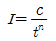
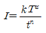
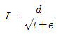
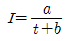
(정답률: 64%)
48. S-curve와 가장 관계가 먼 것은?
- 단위도의 지속시간
- 평형 유출량
- 등우 선도
- 직접 유출 수문곡선
(정답률: 52%)
49. Thiessen 다각형에서 각각의 면적이 20㎢, 30㎢, 50㎢이고, 이에 대응하는 강우량이 각각 40mm, 30mm, 20mm 일 때, 이 지역의 면적평균 강우량은 얼마인가?
- 25mm
- 27mm
- 30mm
- 32mm
(정답률: 67%)
50. 그림과 같이 직각2등변 삼각형의 한 변을 자유표면에 두고, 변의 길이를 3m로 하면 자유표면으로부터 정수압의 작용점은?
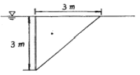
- 1.0m
- 1.5m
- 2.0m
- 2.5m
(정답률: 52%)
51. 지름 4cm의 원형관에서 수맥(水脈)이 그림과 같이 구부러질 때, 곡면을 지지하는데 필요한 힘 Px와 Py의 크기는? (단, 수맥의 속도는 15m/sec이고, 마찰은 무시한다.)
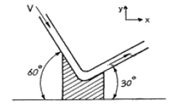
- Px = 0.0106 t, Py = 0.0394 t
- Px = 0.0394 t, Py = 0.0106 t
- Px = 0.106 t, Py = 0.394 t
- Px = 0.394 t, Py = 0.106 t
(정답률: 41%)
52. 지름 1cm, 길이 3m인 원형관에 유속 0.2m/s의 물이 흐를 때 관 길이에 대한 마찰손실 수두는? (단, v=1.12×10-2cm2/sec, ρ = 1000kg/m3)
- 8.023cm
- 6.525cm
- 4.388cm
- 2.194cm
(정답률: 44%)
53. 흐름을 지배하는 가장 큰 요인이 점성일 때 흐름의 상태를 구분하는 방법으로 쓰이는 무차원수는?
- Froude 수
- Reynolds 수
- Weber 수
- Cauchy 수
(정답률: 53%)
54. 수면에서 4m의 깊이에 중심을 지나는 지름 20mm의 작은 오리피스(Orifice)에서 나오는 실제 유량은? (단, 오리피스의 유량계수 C=0.062)
- 1.72ℓ/sec
- 1.83ℓ/sec
- 19.4ℓ/sec
- 86.23ℓ/sec
(정답률: 56%)
55. Darcy의 법칙에 관한 설명으로 옳지 않은 것은?
- Darcy의 법칙은 물의 흐름이 층류일 경우에만 적용가능하고, 흐름 방향과는 무관하다.
- 대수층의 입자가 균일하고 등방향성이면, 유속은 동수 경사에 비례한다.
- 유속 v는 입자 사이를 흐르는 실제유속을 의미한다.
- 투수계수 k는 속도와 같은 차원이며, 흙입자 크기, 공극률, 물의 점성계수 등에 관계된다.
(정답률: 64%)
56. 관수로에 물이 흐를 때 어떠한 조건하에서 층류가 되는 경우는? (단, Re는 레이놀즈수 (Reynolds Number))
- Re>4000
- 4000> Re> 3000
- 3000> Re> 2000
- Re< 2000
(정답률: 66%)
57. 모래여과지에서 사층 두께 2.4m, 투수계수를 0.04cm/sec로 하고 여과수두를 50cm로 할 때 10000m3/day의 물을 여과시키는 경우 여과지 면적은?
- 1289 m2
- 1389 m2
- 1489 m2
- 1589 m2
(정답률: 57%)
58. 중력장에서 단위유체질량에 작용하는 외력 F의 x, y, z축에 대한 성분을 각각 X, Y, Z라고 하고, 각 축방향의 증분을 dx, dy, dz 라고 할 때 등압면의 방정식은?
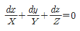
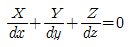
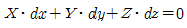
(정답률: 65%)
59. 폭 2.5m, 월류수심 0.4m인 사각형 위어(weir)의 유량은? (단, Francrn공식 : Q=1.8480h3/2에 의하며, Bα : 유효폭, h : 월류수심, 접근유속은 무시하며 양단수축이다.)
- 1.117m3/sec
- 1.126m3/sec
- 1.536m3/sec
- 1.557m3/sec
(정답률: 57%)
60. 신도시에 위치한 택지조성지구의 우수배제를 위하여 우수거를 설계하고자 한다. 신도시에서 재현기간 10년의 강우강도식이 [t:분]일 때 합리식에 의한 설계유량은? (단, 유역의 평균유출계수는 0.5, 유역면적은 1㎢, 우수의 도달시간은 20분)
- 4.6m3/sec
- 13.9m3/sec
- 16.7m3/sec
- 20.8m3/sec
(정답률: 64%)
4과목: 철근콘크리트 및 강구조
61. 지간(L)이 6m인 단철근 직사각형 단순보에 고정하중(자중포함)이 15.5kN/m, 활하중이 35kN/m가 작용할 경우 최대 모멘트가 발생하는 단면의 계수 모멘트(Mu)는 얼마인가? (단, 하중조합을 고려할 것)
- 227.3 kNㆍm
- 300.6 kNㆍm
- 335.7 kNㆍm
- 373.2 kNㆍm
(정답률: 52%)
62. 그림과 같은 단면의 도심에 PS강재가 배치되어 있다. 초기 프레스트레스 힘을 1800kN 작용시켰다. 30%의 손실을 가정하여 콘크리트의 하연 응력이 0이 되도록 하려면 이 때의 휨모멘트 값은 얼마인가? (단, 자중은 무시)
- 120 kNㆍm
- 126 kNㆍm
- 130 kNㆍm
- 150 kNㆍm
(정답률: 60%)
63. 계수전단력 Vu=75kN에 대하여 규정에 위한 최소 전단철근을 배근하여야 하는 직사각형 철근콘크리트보가 있다. 이 보의 폭이 300mm 일 경우 유효깊이(d)의 최소값은? (단, fck = 24MPa, fy = 350MPa)
- 375mm
- 387mm
- 394mm
- 409mm
(정답률: 52%)
64. 콘크리트의 설계기준압축강도가 30MPa이며 철근의 설계기준항복강도가 400MPa인 인장 이형철근 D22의 기본정착길이 (ldh)는 얼마인가? (단, D22 철근의 공칭직경은 22.2mm, 단면적은 387mm2)
- 402mm
- 771mm
- 973mm
- 1157mm
(정답률: 48%)
65. 철근콘크리트 부재의 비틀림철근 상세에 대한 설명으로 틀린 것은? (단, Ph:가장 바깥의 휭방향 폐쇄스터럽 중심선의 둘레(mm))
- 종방향 비틀림철근은 양단에 정착하여야 한다.
- 횡방향 비틀림철근의 간격은 Ph/4보다 작아야 한고 또한 200mm 보다 작아야 한다.
- 비틀림에 요구되는 종방향 철근은 폐쇄스터럽의 둘레를 따라 300mm 이하의 간격으로 분포시켜야 한다.
- 종방향 철근의 지름은 스터럽 간격의 1/24 이상이어야 하며, D10 이상의 철근이어야 한다.
(정답률: 65%)
66. 포스트텐션된 보에 포물선 긴장재가 배치되었다. A단에서 잭킹(jacking)할 때의 인장력은 900kN 이었다. 강재와 쉬스의 마찰손실을 고려할 때 상대편 지지점 B단에서의 긴장력 Px는 얼마인가? (단, 파상마찰계수 k=0.0066/m, 곡률마찰계수 μ=0.30/radian 이고, θ=0.3×2/9=1/15(radian)이며, 근사식을 사용하여 계산한다.)
- 757 kN
- 829 kN
- 900 kN
- 1043 kN
(정답률: 34%)
67. 연속 휨부재의 부모멘트를 재분배하고자 할 경우 휨모멘트를 감소시킬 단면에서 최외단 인장철근의 순인장변형률(Et)이 얼마이상인 경우에만 가능한가?
- 0.0045
- 0.0⑤
- 0.0075
- Ey
(정답률: 35%)
68. 인장응력 검토를 위한 L-150×90×12인 형강(angle)의 전개 층폭 bg는 얼마인가?
- 228mm
- 232mm
- 240mm
- 252mm
(정답률: 64%)
69. 강판형 (plate girder)의 경제적인 높이는 다음 중 어느것에 의해 구해지는가?
- 전단력
- 휨모멘트
- 비틀림모멘트
- 지압력
(정답률: 61%)
70. 다음 필렛용접의 전단응력은 얼마인가?
- 67.72MPa
- 70.72MPa
- 72.72MPa
- 75.72MPa
(정답률: 56%)
71. 길이 6m의 단순 철근콘크리트보의 처짐을 계산하지 않아도 되는 보의 최소두께는 얼마인가? (단, fck=21MPa, fy=350MPa)
- 349 mm
- 356 mm
- 375 mm
- 403 mm
(정답률: 44%)
72. 그림의 단순지지 보에서 긴장재는 C점에 100mm의 편차에 직선으로 배치되고, 1100kN으로 긴장되었다. 보에는 120kN의 집중하중이 C점에 작용한다. 보의 고정하중을 무시할 때 A-C구간에서의 전단력을 약 얼마인가?
- 36.7 kN(↓)
- 120 kN(↓)
- 80 kN(↑)
- 43.3 kN(↑)
(정답률: 31%)
73. 다음에서 깊은 보로 설계할 수 있는 것은?
- 한쪽 면이 하중을 받고 반대쪽 면이 지지되어 하중과 받침부 사이에 압축대가 형성되는 구조요소로서, 순경간(ln)이 부재 깊이의 4배 이하인 부재
- 한쪽 면이 하중을 받고 반대쪽 면이 지지되어 하중과 받침부 사이에 압축대가 형성되는 구조요소로서, 순경간(ln)이 부재 깊이의 5배 이하인 부재
- 받침부 내면에서 부재 깊이의 2.5배 이하인 위치에 등분포하중이 작용하는 경우 경간 중앙부의 최대 휨모멘트가 작용하는 구간
- 받침부 내면에서 부재 깊이의 2.5배 이하인 위치에 등분포하중이 작용하는 경우 등분포하중과 받침부 사이의 구간
(정답률: 42%)
74. Mu=200kNㆍm의 계수모멘트가 작용하는 단철근 직사각형보에서 필요한 철근량(As)은 약 얼마인가? (단, bw=300mm, d=500mm, fck=28MPa, fy=400MPa, ∅=0.85 이다.)
- 1072.7mm2
- 1266.3mm2
- 1524.6mm2
- 1785.4mm2
(정답률: 56%)
75. 그림과 같은 복철근 직사각형 단면에서 응력 사각형의 깊이 a의 값은 얼마인가? (단, fck=24MPa, fy=350MPa, As=5730mm2, As'=1980mm2)
- 227.2mm
- 199.6mm
- 217.4mm
- 183.8mm
(정답률: 57%)
76. 단순 지지된 2방향 슬래브의 중앙점에 집중하중 P가 작용할 때 경간비가 1:2라면 단변과 장변이 부담하는 하중비 (PS : PL)는? (단, PS:단변이 부담하는 하중, PL: 장변이 부담하는 하중)
- 1:8
- 8:1
- 1:16
- 16:1
(정답률: 49%)
77. 폭 200mm, 높이 300mm인 프리텐션 부재에 PS 강재가 도심에서 e=50mm만큼 하향 편심 배치되어 있다. 프리스트레스도입 직후에 PS강재에 작용하는 인장력(PI)은 600kN일 때 탄성 수축으로 인한 프리스트레스의 감소량은? (단, PS강재의 탄성계수(EP)=2.0×105MPa, 콘크리트의 탄성계수(EO)=2.86×104MPa이며 보의 자중은 무시한다.)
- 81.3MPa
- 83.3MPa
- 91.3MPa
- 93.3MPa
(정답률: 24%)
78. 그림과 같은 띠철근 단주의 균형상태에서 축장향 공칭하중(Pb)은 얼마인가? (단, fck=27MPa, fy=400MPa, Ast=4-D35=3800mm2)
- 1360.9kN
- 1520.0kN
- 3645.2kN
- 5165.3kN
(정답률: 37%)
79. 경간이 12m인 대칭 T형보에서 슬래브 중심 간격이 2.0m, 플랜지의 두께가 300mm, 복부의 폭이 400mm일 때 플랜지의 유효폭은?
- 2000mm
- 2500mm
- 3000mm
- 5200mm
(정답률: 55%)
80. 철근콘크리트 구조물의 전단철근에 대한 설명으로 틀린 것은?
- 이형철근을 전단철근으로 사용하는 경우 설계기준 항복 강도 fy는 550MPa을 초과하여 취할 수 없다.
- 전단철근으로서 스터럽과 굽힘철근을 조합하여 사용할 수 있다.
- 주철근에서 45° 이상의 각도로 설치되는 스터럽은 전단철근으로 사용할 수 있다.
- 경사스터럽과 굽힘철근은 부재 중간높이인 0.5d에서 반력점 방향으로 주인장철근까지 연장된 45° 선과 한 번이상 교차되도록 배치하여야 한다.
(정답률: 62%)
5과목: 토질 및 기초
81. 실내시험에 의한 점토의 강도 증가율(Cu/P)산정 방법이 아닌 것은?
- 소성지수에 의한 방법
- 비배수 전단강도에 의한 방법
- 압밀비배수 삼축압축시험에 의한 방법
- 직접전단시험에 의한 방법
(정답률: 62%)
82. ∅=33“인 사질토의 25° 경사의 사면을 조성하려고 한다. 이 비탈면의 지표까지 포화되었을 때 안전율을 계산하면? (단, 사면 흙의 reat=1.8t/m3)
- 0.62
- 1.41
- 0.70
- 1.12
(정답률: 49%)
83. 현장 흙의 들밀도시험 결과 흙을 파낸부분의 체적과 파낸 흙의 무게는 각각 1800cm3, 3.95kg이었다. 함수비는 11.2% 2.⑤g/cm3일 대 상대다짐도는?
- 95.1%
- 96.1%
- 97.1%
- 98.1%
(정답률: 52%)
84. 그림과 같은 조건에서 분사현상에 대한 안전율을 구하면? (단, 모래의
- 1.0
- 2.0
- 2.5
- 3.0
(정답률: 45%)
85. Meyerhof의 일반 지지력 공식에 포함되는 계수가 아닌 것은?
- 국부전단계수
- 근입깊이계수
- 경사하중계수
- 형상계수
(정답률: 47%)
86. 내부마찰각이 30°, 단위중량이 1.8t/m3인 흙의 인장균열 깊이가 3m 일 때 점착력은?
- 1.56t/m2
- 1.67t/m2
- 1.75t/m2
- 1.81t/m2
(정답률: 49%)
87. 흙속에 있는 한 점의 최대 및 최소 주응력이 각각 2.0 kg/cm2 및 1.0kg/cm2일 때 최대 주응력면과 30°를 이루는 평면상의 전단응력을 구한 값은?
- 0.1⑤ kg/cm2
- 0.215 kg/cm2
- 0.323 kg/cm2
- 0.433 kg/cm2
(정답률: 50%)
88. 지표가 수평인 곳이 높이 5m의 연직옹벽이 있다. 흙의 단위중량이 1.8t/m3, 내부 마찰각이 30°이고 점착력이 없을 때 주동토압은 얼마인가?
- 4.5 t/m
- 5.5 t/m
- 6.5 t/m
- 7.5 t/m
(정답률: 48%)
89. 토질조사에 대한 설명 중 옳지 않은 것은?
- 사운딩(Sounding)이란 지중에 저항체를 삽입하여 토층의 성상을 파악하는 현장 시험이다.
- 불교란시료를 얻기 위해서 Foil Sampler, Thin wall tube sampler 등이 사용된다.
- 표준관입시험은 로드(Rod)의 길이가 길어질수록 N치가 작게 나온다.
- 베인 시험은 정적인 사운딩이다.
(정답률: 60%)
90. 모래지층사이에 두께 6m의 점토층이 있다. 이 점토의 토질 실험결과가 아래 표와 같을 때, 이 점토층의 90%압밀을 요하는 시간은 약 얼마인가? (단, 1년은 365일로 계산)
- 12.9년
- 5.22년
- 1.29년
- 52.2년
(정답률: 47%)
91. 투수계수가 2×10-5cm/sec, 수위차 15m인 필댐의 단위폭 1cm에 대한 1일 침투 유량은? (단, 동수수선으로 싸인 간격수 = 15, 유선으로 싸인 간격수 = 5)
- 1×10-2cm3/day
- 864cm3/day
- 36cm3/day
- 14.4cm3/day
(정답률: 41%)
92. 흙속에서의 물의 흐름에 대한 설명으로 틀린 것은?
- 흙의 간극은 서로 연결되어 있어 간극을 통해 물이 흐를 수 있다.
- 특히 사질토의 경우에는 실험실에서 현장 흙의 상태를 재현하기 곤란하기 때문에 현장에서 투수시험을 실시하여 투수계수를 결정하는 것이 좋다.
- 점토가 이산구조로 퇴적되었다면 면모구조인 경우보다 더 큰 투수계수를 갖는 것이 보통이다.
- 흙이 포화되지 않았다면 포화된 경우보다 투수계수는 낮게 측정된다.
(정답률: 45%)
93. 전단마찰각이 25°인 점토의 현장에 작용하는 수직응력이 5t/m2이다. 과거 작용했던 최대 하중이 10t/m2이라고 할 때 대상지반의 정지토압계수를 추정하면?
- 0.40
- 0.57
- 0.82
- 1.14
(정답률: 40%)
94. 평판 재하 실험에서 재하판의 크기에 의한 영향(scale effect)에 관한 설명으로 틀린 것은?
- 사질토 지반의 지지력은 재하판의 폭에 비례한다.
- 점토지반의 지지력은 재하판의 촉에 무관하다.
- 사질토 지반의 침하량은 재하판의 폭이 커지면 약간 커지기는 하지만 비례하는 정도는 아니다.
- 점토지반의 침하량은 재하판의 폭에 무관하다.
(정답률: 47%)
95. 다짐되지 않은 두께 2m, 상대밀도 45%의 느슨한 사질토 지반이 있다. 실내시험결과 최대 및 최소 간극비가 0.85, 0.40으로 각각 산출되었다. 이 사질토를 상대 밀도 70%까지 다짐할 때 두께의 감소는 약 얼마나 되겠는가?
- 13.3cm
- 17.2cm
- 21.0cm
- 25.5cm
(정답률: 41%)
96. 크기가 1.5m×1.5m인 직접기초가 있다. 근입깊이가 1.0m일 때, 기초가 받을 수 있는 최대ㅓ용하중을 Terzaghi방법에 의하여 구하면? (단, 기초지반의 점착력은 1.5t/m2, 단위중량은 1.8t/m3, 마찰각은 20° 이고 이 때의 지지력 계수는 Nc=17.69, Nq=7.44, Nr=3.64 이며, 허용지지력에 대한 안전율은 4.0으로 한다.)
- 약 29t
- 약 39t
- 약 49t
- 약 59t
(정답률: 44%)
97. 아래 그림과 같이 지표까지가 모관상승지역이라 할 때 지표면 바로 아래에서의 유효응력은? (단, 모관상승 지역의 포화도는 90%이다.)
- 0.9t/m2
- 1.0t/m2
- 1.8t/m2
- 2.0t/m2
(정답률: 48%)
98. 함수비 18%의 흙 500kg을 함수비 24%로 만들려고 한다. 추가해야 하는 물의 양은?
- 80.41kg
- 54.52kg
- 38.92kg
- 25.43kg
(정답률: 49%)
99. 흙의 분류법인 AASHTO분류법과 통일분률법을 비교ㆍ분석한 내용으로 틀린 것은?
- AASHTO분류법은 입도분포, 군지수 등을 주요 분류인자로 한 분류법이다.
- 통일분류법은 입도분포, 액성한계, 소성지수 등을 주요분류인자로 한 분류법이다.
- 통일분류법은 0.075mm체 통과율을 35%를 기준으로 조립토와 세립토로 분류하는데 이것은 AASHTO분류법 보다 적절하다.
- 통일분류법은 유기질토 분류방법이 있으나 AASHTO분류법은 없다.
(정답률: 50%)
100. 입도분석 시험결과가 아해 표와 같다. 이 흙을 동일분류법에 위해 분류하면?
- GW
- GP
- SW
- SP
(정답률: 41%)
6과목: 상하수도공학
101. 하수 배제방식의 장ㆍ단점을 비교한 설명으로 옳지 않은 것은?
- 분류식(오수관거와 우수관거를 건설하는 경우)은 합류식보다 관거 부설비가 많이 소요된다.
- 분류식은 우천시에 수세효과를 기대할 수 있다.
- 합류식의 경우 청천시에는 관내의 고형물이 퇴적하기 쉽다.
- 합류식은 폐쇄의 염려가 없고 검시 및 수리가 비교적 용이하다.
(정답률: 64%)
102. 운전 중에 있는 펌프의 토출량을 조절하는 방법으로 옳지 않은 것은?
- 펌프의 운전대수를 조절한다.
- 펌프의 흡입측 밸브를 조절한다.
- 펌프의 회전수를 조절한다.
- 펌프의 토출측 밸브를 조절한다.
(정답률: 54%)
103. 상수도의 정수방법 중 완속여과의 특징을 설명한 것으로 옳지 않은 것은?
- 약품처리 등을 필요로 하지 않는다.
- 탁도가 높거나 플랑크톤 조류가 많은 원수에는 적당하지 않다.
- 여제 청소시에 인력으로 하므로 경비가 적게 들고 오염의 염려가 없다.
- 여과지 면적에 비해 처리할 수 있는 용량이 적기 때문에 대규모 처리에는 부적합하다.
(정답률: 43%)
104. 하수처리방법의 선택시 고려사항과 거리가 먼 것은?
- 처리수의 목표수질
- 송수량과 관종
- 처리장의 입지조건
- 방류수역의 현재 및 장래 이용 상황
(정답률: 47%)
1⑤. 급수량을 산정하는 식의 잘못 정의된 것은?
- 계획1인1일 평균급수량 = 계획1인1일 평균사용수량/계획부하율
- 계획1인1일 최대급수량 = 계획1인1일 평균급수량/계획부하율
- 계획1일 평균급수량 = 계획1인1일 평균급수량×계획급수인구
- 계획1일 최대급수량 = 계획1인1일 최대급수량×계획급수인구
(정답률: 47%)
106. 우물의 수리에서 자유수면 우물의 평형공식은? (단, Q=양수량, K=투수계수)
(정답률: 59%)
107. 경도를 연화(軟化)처리하고자 할 때 가장 적합한 방법은?
- 황산동 살포
- 소다회 주입
- 활성탄 처리
- 생물산화
(정답률: 59%)
108. 하수도에 사용되는 하수관거의 요구조건으로 옳지 않은 것은?
- 외압에 대한 강도가 충분하고 파괴에 대한 저항력이 클 것
- 관거의 내면에 대한 조도계수가 클 것
- 유량의 변동에 대해서 유속의 변동이 적은 수리특성을 가진 단면형일 것
- 이음 시공이 용이하고 수밀성과 신축성이 높을 것
(정답률: 49%)
109. 하수처리장의 소화조에 석회(라임:lime)를 주입하는 이유는?
- pH를 높이기 위해
- 칼슘농도를 증가시키기 위해
- 효소의 농도를 높이기 위해
- 유기산균을 증가시키기 위해
(정답률: 57%)
110. 슬러지 평화(bulking)의 지표가 되는 것은?
- MLSS
- SVI
- MLVSS
- VSS
(정답률: 53%)
111. 계획오수량을 정하는 방법에 대한 설명으로 옳지 않은 것은?
- 생활오수량의 1일1인최대오수량은 1일1인최대급수량을 감안하여 결정한다.
- 지하수량은 1일1인최대오수량의 10~20%로 한다.
- 계획1일평균오수량은 계획1일최소오수량의 1.3~1.8배를 사용한다.
- 합류식에서 우천시 계획오수량은 원칙적으로 계획시간 최대오수량의 3배 이상으로 한다.
(정답률: 59%)
112. 하수 관거내에 황화수소(H2S)가 통상 존재하는 이유에 대한 설명으로 옳은 것은?
- 용존산소로 인해 유황이 산화하기 때문이다.
- 용존산소 결핍으로 박테리아가 메탄가스를 환원시키기 때문이다.
- 용존산소 결핍으로 박테리아가 황산염을 환원시키기 때문이다.
- 용존산소로 인해 박테리아가 메탄가스를 환원시키기 때문이다.
(정답률: 59%)
113. 유속이 작을 때 관내에 발생하는 수리상의 내용으로 옳은 것은?
- 수격작용(water hammer)이 발생하기 쉽다.
- 공동현상(cavitation)이 발생하기 쉽다.
- 체류에 위한 수질변화가 발생한다.
- 벽면이 마찰이 커서 손실수두가 크다.
(정답률: 47%)
114. 만류로 흐르는 수도관에서 조도계수 n=0.01, 동수경사 1=0.001, 관경 D=5.08m 일 때 유량은? (단, Manning 공식을 적용할 것)
- 25m3/sec
- 50m3/sec
- 75m3/sec
- 100m3/sec
(정답률: 66%)
115. 강구강도 , 유역면적 4㎢, 유입시간 5min, 유출계수 C=0.85, 관내유속 1.2m/sec, 관 길이 1000m인 하수관에 유출되는 우수량을 합리식 (Rational Method)을 구한 값은? (단, 강우지속시간(t[분])은 유달시간과 같다.)
- 68.08m3/sec
- 78.08m3/sec
- 88.08m3/sec
- 98.08m3/sec
(정답률: 49%)
116. 처리수량 4⑤00m3/day의 급속여과지의 최소 여과면적은? (단, 여과속도=150m/day, 총 급속여과지수(地數)=6개)
- 39m2
- 42m2
- 45m2
- 48m2
(정답률: 53%)
117. 하수도시설에 관한 설명으로 옳지 않은 것은?
- 하수도시설은 관거시설, 펌프장시설 및 처리장시설로 크게 구별된다.
- 하수배제는 자연유하를 원칙으로 하고 있으며 펌프시설도 사용할 수 있다.
- 하수처리장시설은 물리적 처리시설을 제외한 상물학적, 화학적 처리시설을 의미한다.
- 하수 배제방식은 합류식과 분류식으로 대별할 수 있다.
(정답률: 68%)
118. 우수조정지의 일반적인 설치 위치로 옳지 않은 것은?
- 지하수에 의한 오염의 우려가 있는 곳
- 하류관거 유하능력이 부족한 곳
- 펌프장 능력이 부족한 곳
- 방류수로 유하능력이 부족한 곳
(정답률: 55%)
119. 대장균군(coliform group)이 수질 지표로 이용되는 이유에 대한 설명으로 옳지 않은 것은?
- 소화기 계통의 전염병균이 대장균군과 같이 존재하기 때문에 적합하다.
- 병원균보다 검출이 용이하고 검출속도가 빠르기 때문에 적합하다.
- 소화기 계통의 전염병균보다 저항력이 조금 약하므로 적합하다.
- 시험이 간편하며 정확성이 보장되므로 적합하다.
(정답률: 54%)
120. 다음 급수량 중 크기(양)가 제일 큰 것은?
- 1일 평균급수량
- 1일 최대평균급수량
- 1일 최대급수량
- 시간 최대급수량
(정답률: 52%)